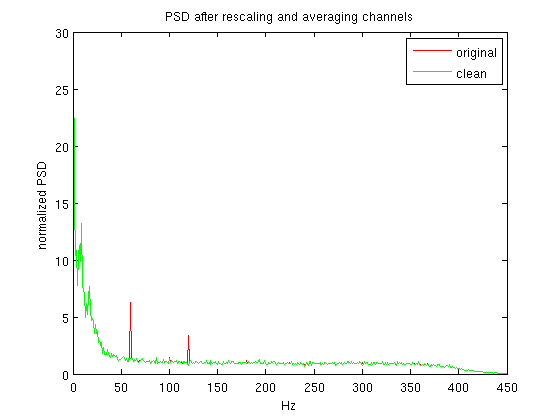

Contents
- Cleaning line frequencies (LF) from MEG / EEG data without filters
- Input
- Output
- Examples
- set defaults
- try to load data file and check if 4D-neuroimaging data
- find chans with no obvious problems and compute meanPSD
- if requested make hp filter
- test 50Hz or 60Hz
- find LF cycles on a filtered channel
- check that whereUp is OK. if not, find cycles by template matching
- prepare parallel processing
- baseline correction if requested
- cleaning the data
- plotting results
- Functions
- internal version of cleanLineF.m
- generate a slowly changing average
- similar to adaptive but makes an average of last 2000 and next 2000 (Ncycles/2) cycles. not as good for an unknown reason.
- compute a simple average
- internal version of oneLineCycle
- clean periodic signal from x, allow phase precession
- set default parameters
function [cleanData,whereUp,noiseSamp,Artifact]=correctLF(data,sRate,chanLF,cfg)
% [cleanData,whereUp,noiseSamp,Artifact]=correctLF(data,sRate,chanLF,cfg); % see more examples below %
Cleaning line frequencies (LF) from MEG / EEG data without filters
The function detects zero crossing of power line artifact cycles (of 50 or 60Hz) and averages the cycles. This average serves as a template noise pattern. Subtracting it from each cycle removes the 50Hz artifact and its harmonics (100, 150, 200...)
Input
4D users can use the function without input arguments. It find the current 'c,*', finds the sampling rate, and detects 50Hz cycles on a ref channel. Use input arguments when not using default parameters.
- data is MEG or EEG data, rows for channels.
it can be a 4D filename 'c,rfhp0.1Hz', a saved data matrix 'data.mat'.
or the data matrix itself (less RAM friendly).
- sRate is sampling rate.
- chanLF is a channel containing detectable 50 or 60Hz. It can be an
MEG reference channel. Leave empty to detect the noisiest channel
automatically. It can be the index of your dirty channel, when this
is one of the channels you want to clean. When the line frequency is
hard to detect on any channel use chanLF='time'. LF cycles will not be
searched for in the data. Averaging will be based on fixed latencies
(20ms for 50Hz artifact). This is best used with low Ncycles (250).
- cfg is an optional structure with the following possible fields:
* cfg.method is 'GLOBAL' or 'ADAPTIVE' (default, see tal & Abeles, 2013).
ADAPTIVE allows the shape of the 50Hz artifact to slowly change
along the recording. GLOBAL assumes steady artifact, good for
short recordings.'FITSIZE' can be used in extreme cases (moving
rats), take care there. 'ADAPTIVE1' is moving a sliding window,
averager. It seems to be less effective than ADAPTIVE.
* cfg.Ncycles can be used with ADAPTIVE and ADAPTIVE1, specifying
how many cycles to average for creating a template. 4000 has no
over cleaning (notch) at all, which is good. but some artifact may remain.
I wouldn't use less than 250 cycles, because it may result in a
50Hz notch. default is 400.
* cfg.Lfreq is the noise frequency, 50 or 60. by default the Lfreq is
detected automatically.
* cfg.jobs is for parallel processing with parfor, the number of
CPU to use.
* cfg.hpFreq is the low cutoff of a highpass filter. This means
that you want to filter the data before cleaning. cfg.hpFreq=0.1
is recommended good for DC recordings.
* cfg.noiseType is 'samp' (default) or 'cyc', to test noise sample by
sample or cycle by cycle. noisy samples or cycles are cleaned,
but their data is not used when creating the noise template.
'samp' is not efficient when you have a lot of low freq noise
(unfiltered DC recording).
* cfg.noiseThr is how many SD for a channel to consider as noise threshold.
When cfg.noiseType='cyc', SD is std(mean(abs(data of one cycle))).
* cfg.blc is baseline correction before work on data. it can be 'none',
'median' (default), 'mean' or [time0 time1] to remove the mean of a
certain time window.
* cfg.BLfreq ([125 145]) is the limits of baseline frequencies by which to
normalize the fft when plotting. does not change the cleaning itself.
This was added for neuromag, to integrate mag and grad channels.
* cfg.reverse is for running the cleaning forward and reverse in
order to clean the beginning of the file better, where you
cannot clean adaptively using only forward sweap. default is
false.Output
- cleanData is what it is
- whereUp is a vector with samples where zero crossing was detected
- noiseSamp samples where noise was detected
- Artifact possible for one channel data only, it is the estimated
artifact (chained templates)Examples
cleanData=correctLF('data.mat',1017.25,trig); where trig is a digital channel recording the power line zero crossing, 1017.25 is the sampling rate. In data.mat you have a matrix with rows for channels
cleanData=correctLF(EEGdata,1000); Here we find which EEG channel has most power line artifact and zero crossing is assessed for it.
cleanData=correctLF; 4D MEG users. it will find the REF channel with most 50Hz (or 60) and clean the MEG. to save it to 4D file format use rewrite_pdf(cleanData).
Yuval Harpaz Dec 2014
set defaults
if ~exist ('chanLF','var') chanLF=[]; end if ~exist('cfg','var') cfg={}; end Lfreq =default('Lfreq',[],cfg); % test if 50 or 60Hz method =default('method','ADAPTIVE',cfg); %average if isfield(cfg,'Ncycle') % spelling error Ncycles=default('Ncycle',400,cfg); else Ncycles=default('Ncycles',400,cfg); end jobs =default('jobs',[],cfg); % no parallel processing hpFreq =default('hpFreq',[],cfg); % no high pass filter noiseThr =default('noiseThr',5,cfg); % 5 SD as noise threshold noiseType =default('noiseType','samp',cfg); % tests noise by sample blc =default('blc','median',cfg); BLfreq =default('BLfreq',[125 145],cfg); reverse =default('reverse','false',cfg); if strcmpi(method,'FITSIZE') lookForLag=true; else lookForLag=false; end
try to load data file and check if 4D-neuroimaging data
if ~exist('data','var') data=[]; sRate=[]; end if ischar(data) if strcmp(data(end-3:end),'.mat') % read matrix from file 'data.mat' PWD=pwd; display(['loading ',PWD,'/',data,]); data=load(['./',data]); dataField=fieldnames(data); eval(['data=data.',dataField{1,1},';']); else % read 4D data from file name specified in 'data' cloc=strfind(data,'c'); comaloc=strfind(data,','); if ~isempty(cloc) && ~isempty(comaloc) if comaloc(end)>cloc(1) var4DfileName=data; end end end end if isempty(data) || exist('var4DfileName','var'); if ~exist('var4DfileName','var'); try var4DfileName=ls('hb_c,*'); catch var4DfileName=ls('c,*'); end var4DfileName=['./',var4DfileName(1:end-1)]; end var4Dp=pdf4D(var4DfileName); sRate=double(get(var4Dp,'dr')); var4Dhdr = get(var4Dp, 'header'); var4DnSamp=var4Dhdr.epoch_data{1,1}.pts_in_epoch; var4Dchi = channel_index(var4Dp, 'meg', 'name'); display(['reading ',var4DfileName]); data = read_data_block(var4Dp,[1 var4DnSamp],var4Dchi);%,var4Dchi); if isempty(chanLF) var4Dlabels={'MCxaA','MCyaA','MCzaA','MLxaA','MLyaA','MLzaA','MRxaA','MRyaA','MRzaA'}; var4DchiRef = channel_index(var4Dp,var4Dlabels, 'name'); var4Dref = read_data_block(var4Dp,[1 var4DnSamp],var4DchiRef);%,var4Dchi); [FourRef,Fref]=fftBasic(var4Dref,round(sRate)); if isempty(Lfreq) Lfreq=findLfreq(FourRef,Fref); end if isempty(chanLF) maxChani=findchanLF(FourRef,Fref,Lfreq); end chanLF=var4Dref(maxChani,:); display(['selected ',var4Dlabels{maxChani},' as Line Freq cue']) end clear var4D* end if isempty(jobs) || size(data,1)==1 par=false; else if jobs>1 par=true; else par=false; end end
find chans with no obvious problems and compute meanPSD
testSamp=min([round(sRate) size(data,2)]); for chani=1:size(data,1) good(chani)=true; %#ok<AGROW> if isequal(data(chani,1:testSamp),uint16(data(chani,1:testSamp))) || length(unique(data(chani,1:testSamp)))<20 good(chani)=false; %#ok<AGROW> end end good=find(good);
if requested make hp filter
if ~isempty(hpFreq); display('filtering') HighPassSpecObj=fdesign.highpass('Fst,Fp,Ast,Ap',0.001,hpFreq,60,1,sRate);% HighPassFilt=design(HighPassSpecObj ,'butter'); % BL correction for 1st sec window to avoid ripples in the beginning for chani=1:size(data,1) data(chani,:)=data(chani,:)-mean(data(chani,1:round(sRate))); end data = myFilt(data,HighPassFilt); end
test 50Hz or 60Hz
display('computing fft') % check size not to overload dSize=size(data,1)*size(data,2); if dSize>500000000 fftLength=round(500000000/size(data,1)); display(['lots of data, displaying fft only for about ',num2str(round(fftLength/sRate/60)),'min']) else fftLength=size(data,2); end [Four,F]=fftBasic(data(good,1:fftLength),round(sRate)); [~, BLfreq1i] = min(abs(F-BLfreq(1))); % index for 125Hz [~, BLfreq2i] = min(abs(F-BLfreq(2))); scale=mean(abs(Four(:,BLfreq1i:BLfreq2i)),2); if isempty(Lfreq); display('filtering and searching for line frequency') [Lfreq,meanPSD]=findLfreq(Four,F); disp(['line frequency is ',num2str(Lfreq),'Hz']) else FourScaled=zeros(size(Four)); for chani=1:size(Four,1) FourScaled(chani,:)=abs(Four(chani,:))/scale(chani); end meanPSD=mean(FourScaled,1); end display('done fft, preparing LF time indices')
find LF cycles on a filtered channel
lookForLF=true; if isempty(chanLF); %[Four,F]=fftBasic(data(good,:),round(sRate)); maxChani=findchanLF(Four,F,Lfreq); chanLF=data(good(maxChani),:); display(['selected chan index ',num2str(good(maxChani)),' as Line Freq cue']) elseif ischar(chanLF) if strcmpi(chanLF,'time') start=double(1):sRate/Lfreq:double(size(data,2)); whereUp=round(start); lookForLF=false; elseif strcmp(chanLF(end-3:end),'.mat') chanLF=load(['./',data]); dataField=fieldnames(chanLF); eval(['chanLF=chanLF.',dataField{1,1},';']); else error('could not figure out what to do with chanLF string') end elseif length(chanLF)==1; chanLF=data(chanLF,:); end if lookForLF if length(unique(chanLF))==2 % zero crossing is coded in chanLF (trigger channel) trigShift=zeros(size(chanLF)); trigShift(2:end)=chanLF(1:end-1); trigShift=uint16(trigShift); whereUp=find((uint16(chanLF)-trigShift)>0); if max(diff(whereUp))>sRate/Lfreq+3 || min(diff(whereUp))<sRate/Lfreq-3 warning('some triggers are at irregular times') end else if ~exist('BPfilt','var') BPobj=fdesign.bandpass(... 'Fst1,Fp1,Fp2,Fst2,Ast1,Ap,Ast2',... Lfreq-10,Lfreq-5,Lfreq*2+5,Lfreq*2+10,60,1,60,sRate); BPfilt=design(BPobj ,'butter'); end chanLFf=myFilt(chanLF-mean(chanLF(1:round(sRate))),BPfilt); chanLFShift=[0,chanLFf(1:end-1)]; logsum=chanLFf>0; logsum2=chanLFShift<0; whereUp=logsum+logsum2==2; whereUp=find(whereUp); end end cycLength=round(sRate/Lfreq);
check that whereUp is OK. if not, find cycles by template matching
cycInterval=1000*mean(diff(whereUp))/sRate; if ~round(cycInterval)==1000/Lfreq warning('whereUp has wrong frequency') end badCue=find(diff(whereUp)>1.2*sRate/Lfreq); if ~isempty(badCue) whereUpOld=whereUp; % try matching a template Fp1=round(Lfreq*0.67); % 34Hz highpass Fp2=round(Lfreq*2.33); % 117Hz low pass ObjData=fdesign.bandpass(... 'Fst1,Fp1,Fp2,Fst2,Ast1,Ap,Ast2',... 1,Fp1,Fp2,Fp2+10,60,1,60,sRate); %ObjData=fdesign.highpass('Fst,Fp,Ast,Ap',1,round(Lfreq*0.67),60,1,sRate);% Filt=design(ObjData ,'butter'); chanLFhp = myFilt(chanLF,Filt); cycCount=0; temp=zeros(1,round(sRate/Lfreq)); for upi=round(1:sRate/Lfreq:sRate*5) cycCount=cycCount+1; temp(cycCount,:)=chanLFhp(upi:upi+round(sRate/Lfreq)-1); end temp=mean(temp,1); display('matching template artifact to trace, to find zero crossing') [~,signal]=match_temp(chanLFhp,temp,1); [~, IpeaksPos]=findPeaks(signal,0,round(0.75*length(temp))); % no peaks closer than 60% of period [~, IpeaksNeg]=findPeaks(-signal,0,round(0.75*length(temp))); if std(diff(IpeaksPos))<std(diff(IpeaksNeg)) Ipeaks=IpeaksPos; else Ipeaks=IpeaksNeg; end if std(diff(Ipeaks))>0.2*sRate/Lfreq warning('std of cue interval is large') end whereUp=Ipeaks-round(cycLength/4); if whereUp(1)<1 whereUp=whereUp(2:end); end badCueTemp=find(diff(whereUp)>ceil(1.3*sRate/Lfreq)); if length(badCueTemp)>1.1*length(badCue) disp('template match did not do good, reverting to previous whereUp') whereUp=whereUpOld; end end cycInterval=1000*mean(diff(whereUp))/sRate; if ~round(cycInterval)==1000/Lfreq error('whereUp has wrong frequency') end if whereUp(1)>(ceil(sRate/Lfreq)+1) diary LFlog.txt disp('first LF index is away from the beginning, guessing first cycles') diary off firstInd=fliplr(round(double(whereUp(1)):-mean(diff(whereUp)):1)); whereUp=[firstInd(1:end-1),whereUp]; end if (size(data,2)-whereUp(end))>(ceil(sRate/Lfreq)+1) diary LFlog.txt disp('last LF index is away from the end, guessing last cycles') diary off lastInd=round(double(whereUp(end)):mean(diff(whereUp)):size(data,2)); whereUp=[whereUp,lastInd(2:end)]; end badCue=find(diff(whereUp)>ceil(1.3*sRate/Lfreq)); if ~isempty(badCue) diary LFlog.txt disp(['irregular interval between cues at (seconds): ',num2str(whereUp(badCue)/sRate)]) diary off end
prepare parallel processing
%figure;plot(oneLineCycleInternal(data,whereUp(2000:6000),noiseType,5,cycLength)) if par closeLabs=false; try nCPU=matlabpool('size'); % 0 if no matlabpool yet; catch disp('could not find "matlabpool". Setting "nCPU" to 1') nCPU=1; end if nCPU==0 closeLabs=true; if isempty(jobs) try matlabpool; jobs=matlabpool('size'); catch jobs=1; warning('cannot get matlabpool to work, define parallel for your matlab to work faster') end else try matlabpool ('open', jobs); catch jobs=1; warning('cannot get matlabpool to work, define parallel for your matlab to work faster') end end else if isempty(jobs) try jobs=matlabpool('size'); catch jobs=1; warning('cannot get matlabpool to work, define parallel for your matlab to work faster') end elseif nCPU~=jobs try matlabpool close %matlabpool('local',jobs); matlabpool ('open', jobs) catch %#ok<*CTCH> jobs=1; warning('cannot get matlabpool to work, define parallel for your matlab to work faster') end end end end
baseline correction if requested
if ischar(blc) if strcmp(blc,'none') % no baseline correction elseif strcmp(blc,'median') for chani=1:size(data,1) data(chani,:)=data(chani,:)-median(data(chani,:)); end elseif strcmp(blc,'mean') for chani=1:size(data,1) data(chani,:)=data(chani,:)-mean(data(chani,:)); end end elseif size(blc,1)*size(blc,2)==2 blc0=round(blc(1)*sRate); blc1=round(blc(2)*sRate); if blc0==0 blc0=1; end for chani=1:size(data,1) data(chani,:)=data(chani,:)-mean(data(chani,blc0:blc1)); end end
cleaning the data
estimate zero crossing on averaged cycle
lag=zeros(1,size(data,1)); % not zero for FITSIZE method if lookForLag % for FITSIZE for chani=1:size(data,1) meanLine=oneLineCycleInternal(data(chani,:),whereUp,noiseType,noiseThr,cycLength); meanLine=meanLine-mean(meanLine(1:cycLength)); t1=meanLine(1:end-1); t2=meanLine(2:end); tt=t1.*t2; indx=find(tt<0); % all zero crossings indx=[round(cycLength/2)-indx(1) indx(1)]; [~,mini]=min(abs(indx)); indx=indx(mini); lag(chani)=indx; end end if size(data,1)==1 display('cleaning') wu=whereUp+lag; wu=wu(wu>0); wu=wu(wu<size(data,2)); [cleanData,~,nS,Artifact]=cleanLineFinternal(data, wu, [], upper(method),[],Ncycles,noiseType,noiseThr,sRate,cycLength); noiseSamp{1,1}=nS; if reverse temp=cleanLineFinternal(fliplr(data), fliplr(size(data,2)-whereUp+1), [], upper(method),[],Ncycles,noiseType,noiseThr,sRate,cycLength); temp=fliplr(temp); rev1=Ncycles*cycLength; % good samples only from reverse cleaning rev2=size(data,2)-rev1+1; cleanData(1,1:rev1)=temp(1:rev1); cleanData(1,rev1+1:rev2-1)=(cleanData(1,rev1+1:rev2-1)+temp(rev1+1:rev2-1))./2; end clear data else Artifact='only applies for one channel analysis'; cleanData=data(good,:); nSamp=cell(size(cleanData,1),1); tic [cleanData(1,:),~,nSamp{chani,1}]=cleanLineFinternal(data(good(1),:), whereUp, [], upper(method),[],Ncycles,noiseType,noiseThr,sRate,cycLength); time1st=toc; if reverse temp=cleanLineFinternal(fliplr(data(good(1),:)), fliplr(size(data,2)-whereUp+1), [], upper(method),[],Ncycles,noiseType,noiseThr,sRate,cycLength); temp=fliplr(temp); rev1=Ncycles*cycLength; % good samples only from reverse cleaning rev2=size(data,2)-rev1+1; cleanData(1,1:rev1)=temp(1:rev1); cleanData(1,rev1+1:rev2-1)=(cleanData(1,rev1+1:rev2-1)+temp(rev1+1:rev2-1))./2; time1st=time1st*2; end if par timeEstimate=num2str(ceil(time1st*(length(good)-1)/60/jobs)); display(['cleaning ',num2str(length(good)),' channels in parallel, wait about ',timeEstimate,'min']) else timeEstimate=num2str(ceil(time1st*(length(good)-1)/60/1)); display(['cleaning ',num2str(length(good)),' channels one by one, wait about ',timeEstimate,'min. channel ']) end % do the cleaning if par parfor chani=2:length(good) wu=whereUp+lag(chani); wu=wu(wu>0); wu=wu(wu<size(data,2)); [cleanData(chani,:),~,nSamp{chani,1}]=cleanLineFinternal(cleanData(chani,:), wu, [], upper(method),[],Ncycles,noiseType,noiseThr,sRate,cycLength); if reverse fowAndRev=cleanData(chani,:); temp=cleanLineFinternal(fliplr(data(chani,:)), fliplr(size(data,2)-whereUp+1), [], upper(method),[],Ncycles,noiseType,noiseThr,sRate,cycLength); temp=fliplr(temp); rev1=Ncycles*cycLength; % good samples only from reverse cleaning rev2=size(data,2)-rev1+1; fowAndRev(1:rev1)=temp(1:rev1); fowAndRev(rev1+1:rev2-1)=(fowAndRev(rev1+1:rev2-1)+temp(rev1+1:rev2-1))./2; cleanData(chani,:)=fowAndRev; end end else for chani=2:length(good) wu=whereUp+lag(chani); wu=wu(wu>0); wu=wu(wu<size(data,2)); [cleanData(chani,:),~,nSamp{chani,1}]=cleanLineFinternal(cleanData(chani,:), wu, [], upper(method),[],Ncycles,noiseType,noiseThr,sRate,cycLength); if reverse temp=cleanLineFinternal(fliplr(data(chani,:)), fliplr(size(data,2)-whereUp+1), [], upper(method),[],Ncycles,noiseType,noiseThr,sRate,cycLength); temp=fliplr(temp); rev1=Ncycles*cycLength; % good samples only from reverse cleaning rev2=size(data,2)-rev1+1; cleanData(chani,1:rev1)=temp(1:rev1); cleanData(chani,rev1+1:rev2-1)=(cleanData(chani,rev1+1:rev2-1)+temp(rev1+1:rev2-1))./2; end progNum(chani); end end data(good,:)=cleanData; clear cleanData cleanData=data;% sorry about this mess, the parfor made me do this clear data noiseSamp=cell(size(cleanData,1),1); for chani=1:length(good) noiseSamp{good(chani),1}=nSamp{chani,1}; end time2nd=toc; mins=time2nd/60; if floor(mins)>str2num(timeEstimate) well='well, '; else well=''; end secs=60*(mins-floor(mins)); txt=['\n',well,'it took ',num2str(floor(mins)),'min and ',num2str(round(secs)),'sec\n']; fprintf(txt); end
plotting results
disp('plotting') [Four,F]=fftBasic(cleanData(good,1:fftLength),round(sRate)); % [~, BLfreq1i] = min(abs(F-125)); % index for 125Hz % [~, BLfreq2i] = min(abs(F-145)); %scale=mean(abs(Four(:,BLfreq1i:BLfreq2i)),2); for chani=1:size(Four,1) Four(chani,:)=abs(Four(chani,:))/scale(chani); end meanPSDclean=mean(Four,1); figure; plot(F,meanPSD,'r'); hold on plot(F,meanPSDclean,'g') legend('original','clean') title('PSD after rescaling and averaging channels') if par if closeLabs try matlabpool close end end end display('done cleaning LF')
Functions
function [Lfreq,meanPSD]=findLfreq(fourier,freq) % finds if there is more 50 or 60Hz in the data. [~, BLfreq1i] = min(abs(freq-125)); % index for 125Hz [~, BLfreq2i] = min(abs(freq-145)); scale=mean(abs(fourier(:,BLfreq1i:BLfreq2i)),2); for chani=1:size(fourier,1) fourier(chani,:)=abs(fourier(chani,:))/scale(chani); end meanPSD=mean(fourier,1); % power spectrum, averaged over channels [~, i50] = min(abs(freq-50)); [~, i60] = min(abs(freq-60)); snr50=2*meanPSD(i50)/(meanPSD(i50-2)+meanPSD(i50+2)); snr60=2*meanPSD(i60)/(meanPSD(i60-2)+meanPSD(i60+2)); if meanPSD(i50)>meanPSD(i60) && snr50>2 Lfreq=50; elseif meanPSD(i60)>meanPSD(i50) && snr60>2 Lfreq=60; else plot(freq,meanPSD) title('Power Spectrum averaged over channels') error('cannot makeup my mind if thhere is 50 or 60 Hz artifact. you can state it in cfg.Lfreq=50;') end function maxChani=findchanLF(fourier,freq,Lfreq) % finds which channel has most power-line artifact [~, BLfreq1i] = min(abs(freq-125)); % index for 125Hz [~, BLfreq2i] = min(abs(freq-145)); [~, iLF] = min(abs(freq-Lfreq)); scale=mean(abs(fourier(:,BLfreq1i:BLfreq2i)),2); [~,maxChani]=max(abs(fourier(:,iLF))./scale); %round(freq)==Lfreq function [cleaned, mean1,noiseSamp,Artifact] = cleanLineFinternal(dataA, whereUp, epochs, method, mean0,startNum,noiseType,noiseThr,sRate,cycLength)
internal version of cleanLineF.m
clean the line frequency based on points at which the Mains flipped from
negative to positive
[cleaned, mean1] = cleanLineF(dataA, whereUp, epochs, method, Mean0);
dataA - array with one channel of MEGdata
whereUp - list of column indices where Line Freq changed from negative to
positive. If the mark of this change comes from ExtTrig #1 it
may be found by:
whereUp=find(diff(mod(trig5to45,511)>=256)==1);
epochs - list of indices where the last piece ended [default [0,length(dataA)]
method - one of 3 possibilities:
'GLOBAL' - the average over the entire data is used [default]
'ADAPTIVE' - The averge gradually follow the mean, starting with
the average over 5 sec.
'PHASEPRECESSION' - The data is interpolated 10 folds and the phase
precession at each trig is considered
'FITSIZE' similar to globall but tries to adjust 50Hz amplitude cycle by cycle (moving rats)
Mean0 - start from that mean. If not available comput from 1-st 256
cycles.
startNum- how many cycles to take for adaptive templatecleaned - same dimension like dataA but cleaned from the line frequency artefact. mean1 - the last mean used
noiseThr- how many std(mean(abs(data of one cycle))) to consider as noise. default is 5 SD. sRate - needed for filter in FITSIZE method
% initialize if size(dataA,1)>1 error('one channel only') end if nargin>3 okArgs = {'GLOBAL','ADAPTIVE','PHASEPRECESSION','FITSIZE','ADAPTIVE1'}; k = find(strcmpi(method, okArgs)); if isempty(k) error('MATLAB:MEGanalysis:BadParameter',... 'Unknown method name: %s.',method); elseif length(k)>1 error('MATLAB:MEGanalysis:BadParameter',... 'Ambiguous method name: %s.',method); else Global=false; Adaptive = false; phasePrecession = false; fitSize=false; Adaptive1 = false; switch(k) case 1 % GLOBAL Global=true; case 2 % ADAPTIVE Adaptive = true; if ~exist('startNum','var') startNum=[]; end if isempty(startNum) startNum=4000; end case 3 % PhasePrecession phasePrecession = true; case 4 fitSize=true; case 5 Adaptive1=true; if ~exist('startNum','var') startNum=[]; end if isempty(startNum) startNum=4000; end end end else Global=true; % the default Adaptive = false; phasePrecession = false; end if ~exist('mean0', 'var'), mean0=[]; end if ~isempty(mean0) maxL = length(mean0)-1; else maxL = max(diff(whereUp)); end if ~exist('epochs', 'var'), epochs = []; end if isempty(epochs), epochs = [0, length(dataA)]; end if length(epochs)>2 epoched = true; epochS = epochs(1:end-1)+1; epochE = [(epochS(2:end)-1) length(dataA)]; else epoched = false; epochS = epochs(1)+1; epochE = epochs(2)-1; if length(whereUp)<500 && ~Global warning('MATLAB:MEGanalysis:ImproperCombination',... 'Data is too short so only GLOBAL is allowed') Global=true; % the default Adaptive = false; phasePrecession = false; end end if epoched && ~Global warning('MATLAB:MEGanalysis:ImproperCombination',... 'Data is epoched and only GLOBAL is allowed') Global=true; % the default Adaptive = false; phasePrecession = false; end % adjust if first epoch does not start at 1 if epochS(1)>1 epochS=[1 epochS]; epochE = [epochS(2)-1 epochE]; end if ~exist('noiseThr','var') noiseThr=[]; end if isempty(noiseThr) noiseThr=5; end if ~exist('fitSize','var') fitSize=[]; end if isempty(fitSize) fitSize=false; end % Clean Artifact=zeros(size(dataA)); if Global if ~epoched meanL=round(mean(diff(whereUp))); else % consider only whereUp with complete cycles at each epoch error('no support for epoched, use createCleanFile'); end % lastCycleStart = whereUp(end); cleaned = zeros(size(dataA)); % get the mean signal per line cycle [meanLine,noiseSamp] = oneLineCycleInternal(dataA,whereUp,noiseType,noiseThr,cycLength); % subtract from signal one cycle at a time for ii=1:length(whereUp)-1 iStrt = whereUp(ii); iEnds = whereUp(ii+1) -1; numInThisCycle = iEnds-iStrt+1; artifact=meanLine(:,1:numInThisCycle); Artifact(iStrt:iEnds)=artifact; cleaned(:,iStrt:iEnds) = dataA(:,iStrt:iEnds)-artifact; end % subtract the leftover tail lastHere=iEnds; if lastHere<length(dataA) % clean the last piece lastTail = size(cleaned,2)-lastHere; if lastHere-iEnds+lastTail<=meanL % less then one cycle left cleaned(:,lastHere+1:end) = dataA(:,lastHere+1:end)-... meanLine(:,lastHere-iEnds+1:lastHere-iEnds+lastTail); else % treat later warning('MATLAB:MEGanalysis:incompleteCalculations', ['Last ' num2str(lastTail) ' Not cleaned!']); cleaned(:,lastHere+1:end) = dataA(:,lastHere+1:end); end end mean1 = meanLine; elseif fitSize hpObj=fdesign.highpass('Fst,Fp,Ast,Ap',1,40,60,1,sRate);% Filt=design(hpObj ,'butter'); dataAhp = myFilt(dataA,Filt); meanL=round(mean(diff(whereUp))); firstCycleStart = whereUp(1); first=1; last = length(whereUp)-1; cleaned = zeros(size(dataA)); % get the mean signal per line cycle [meanLine,noiseSamp] = oneLineCycleInternal(dataA,whereUp,noiseType,noiseThr,cycLength); meanLine=meanLine-meanLine(1); % find zero crossing in template t1=meanLine(1:end-1); t2=meanLine(2:end); tt=t1.*t2; dt = t2-t1; indx_up = find( (tt<0) & (dt>0) ) ; indx_down = find( (tt<0) & (dt<0) ) ; if length(indx_up)==2 indx_up=indx_up(2); end if length(indx_down)==2 indx_down=indx_down(2); end indx1=min([indx_up indx_down]); indx2=max([indx_up indx_down]); numInThisCycle = firstCycleStart-1; if meanL==numInThisCycle strtOffset=1; else strtOffset=0; end if epochE-whereUp(last)>meanL % add one cycle thisWhereUp = whereUp(first-strtOffset:(last+1)); else thisWhereUp = whereUp(first-strtOffset:last); end if meanL>numInThisCycle cleaned(:,epochS:firstCycleStart-1) = dataA(:,epochS:firstCycleStart-1)... - meanLine(:,(meanL-numInThisCycle):meanL-1); iEnds = thisWhereUp; end for ii=1:length(thisWhereUp)-1 iStrt = thisWhereUp(ii); iEnds = thisWhereUp(ii+1) -1; numInThisCycle = iEnds-iStrt+1; artifact=zeros(1,numInThisCycle); artifact(1:min(indx2,numInThisCycle))=meanLine(:,1:min(indx2,numInThisCycle)); if length(iStrt:iEnds)<=length(meanLine) mLtrimmed=meanLine(1:indx2); mLtrimmed=mLtrimmed-(mLtrimmed(1)+mLtrimmed(end))/2; rs=resample(mLtrimmed,length(iStrt:iEnds),length(mLtrimmed)); artifact=rs; if ~sum(ismember(iStrt:iEnds,noiseSamp)) indx_down_rs=round(indx1*length(iStrt:iEnds)/length(mLtrimmed)); indx_up_rs=round(indx2*length(iStrt:iEnds)/length(mLtrimmed)); x=rs(1,1:indx_down_rs); y=dataAhp(:,iStrt:iStrt+indx_down_rs-1); pU=polyfit(x,y,1); x=rs(1,indx_down_rs+1:indx_up_rs); y=dataAhp(:,iStrt+indx_down_rs+1:iStrt+indx_up_rs); pD=polyfit(x,y,1); if pU(1)>0.5 && pU(1)<1.5 artifact(1:indx_down_rs)=pU(1)*rs(1,1:indx_down_rs);%+pHP(2);1,1:indx_down); end if pD(1)>0.5 && pD(1)<1.5 artifact(indx_down_rs+1:min([indx_up_rs,numInThisCycle]))=pD(1)*rs(1,indx_down_rs+1:min([indx_up_rs,numInThisCycle]));%+pHP(2); end end end Artifact(iStrt:iEnds)=artifact; cleaned(iStrt:iEnds) = dataA(iStrt:iEnds)-artifact; end % subtract the leftover tail if epochE>iEnds ; %clean the tail lastHere = epochE; cleaned(:,iEnds+1:lastHere) =... dataA(:,iEnds+1:lastHere)-... meanLine(:,1:lastHere-iEnds); end if lastHere<length(dataA) % clean the last piece lastTail = size(cleaned,2)-lastHere; if lastHere-iEnds+lastTail<=meanL % less then one cycle left cleaned(:,lastHere+1:end) = dataA(:,lastHere+1:end)-... meanLine(:,lastHere-iEnds+1:lastHere-iEnds+lastTail); else % treat later warning('MATLAB:MEGanalysis:incompleteCalculations', ['Last ' num2str(lastTail) ' Not cleaned!']); cleaned(:,lastHere+1:end) = dataA(:,lastHere+1:end); end end mean1 = meanLine; elseif Adaptive
generate a slowly changing average
cleaned = dataA;
% startNum=256;
numCycles = length(whereUp);
Q = 1-1/startNum;
sum1 = zeros(1,maxL+1);
ml1 = nan(numCycles,maxL +1);
if ~exist('mean0', 'var')
mean0 = [];
else
if sum(abs(mean0))==0, mean0=[]; end
end
% Estimate noise
if strcmp(noiseType,'cyc')
for cycle = 1:(numCycles-2)
startCycle = whereUp(cycle);
amp1(cycle) = mean(abs(dataA(startCycle:startCycle+maxL)-mean(dataA(startCycle:startCycle+maxL)))); %#ok<AGROW>
end
amp2=(amp1-mean(amp1))./std(amp1);
noise=min(amp1(amp2>=noiseThr));
if isempty(noise)
noise=max(amp1); % to accept all segments
end
elseif strcmp(noiseType,'samp')
noise=std(dataA)*noiseThr;
end
% compute a simple average
noiseSamp=[];
if isempty(mean0) % compute for the first 256 (or startNum)
cycCount=0;
for cycle = 1:startNum
startCycle = whereUp(cycle);
if strcmp(noiseType,'cyc') && mean(abs(dataA(startCycle:startCycle+maxL)-mean(dataA(startCycle:startCycle+maxL))))<=noise
sum1 = sum1 + dataA(startCycle:startCycle+maxL);
cycCount=cycCount+1;
elseif strcmp(noiseType,'samp') && sum(abs((dataA(startCycle:startCycle+maxL)))>=noise)==0
sum1 = sum1 + dataA(startCycle:startCycle+maxL);
cycCount=cycCount+1;
else
noiseSamp=[noiseSamp,startCycle:(startCycle+maxL)]; %#ok<*AGROW>
end
end
ml1(1:startNum,:) = repmat(sum1/cycCount,startNum,1);
else % mean0 was provided
% check that OK
r = size(mean0,1);
if r==1 % a row vector - transpose
mean0 = mean0';
r = size(mean0,1);
end
if r~= length(sum1)
error('MATLAB:MEGanalysis:ImproperParam',...
'The initial mean must be %d long', length(sum1))
end
ml1(1:startNum,:) = repmat(mean0',startNum,1);
end % end of getting the first startNum averages
% continue in adaptive way
for cycle = startNum+1:numCycles
startCycle = whereUp(cycle);
if startCycle+maxL <= size(dataA,2)
if strcmp(noiseType,'cyc') && mean(abs(dataA(startCycle:startCycle+maxL)-mean(dataA(startCycle:startCycle+maxL)))) <= noise
ml1(cycle,:) = Q*ml1(cycle-1,:) + dataA(startCycle:startCycle+maxL)/startNum;
elseif strcmp(noiseType,'samp') && sum(abs((dataA(startCycle:startCycle+maxL)))>=noise)==0
ml1(cycle,:) = Q*ml1(cycle-1,:) + dataA(startCycle:startCycle+maxL)/startNum;
else
noiseSamp=[noiseSamp,startCycle:(startCycle+maxL)];
ml1(cycle,:)=ml1(cycle-1,:);
end
else % extra cycles copy the previous one
ml1(cycle,:)=ml1(cycle-1,:); % copy the last one
end
end
% BL correction for template
for tempi=1:size(ml1,1)
ml1(tempi,:)=ml1(tempi,:)-mean(ml1(tempi,1:cycLength));
end
for ii=1:length(whereUp)-1
iStrt = whereUp(ii);
iEnds = whereUp(ii+1) -1;
numInThisCycle = iEnds-iStrt+1;
artifact=ml1(ii,1:numInThisCycle);
cleaned(iStrt:iEnds) = dataA(iStrt:iEnds)-artifact;
Artifact(iStrt:iEnds)=artifact;
end
% treat the edges
if whereUp(1)>1 %header before first whereUp
numInHeader = whereUp(1)-1;
artifact=ml1(1,end-numInHeader+1:end);
cleaned(1:numInHeader) = dataA(1:numInHeader)-artifact;
Artifact(1:numInHeader)=artifact;
end
if whereUp(end)<length(dataA) % tail after whereUp
numInTail = length(dataA)-whereUp(end);
artifact=ml1(end, end-numInTail:end);
cleaned(end-numInTail:end) = dataA(end-numInTail:end)-artifact;
Artifact(end-numInTail:end)=artifact;
end
mean1 = ml1(end,:);
elseif phasePrecession interpNo =10; % How many interpolation points between samples [cleaned, mean1,Artifact] = cleanWphaseInternal(dataA,whereUp,interpNo); noiseSamp='not available for phasePrecession'; elseif Adaptive1
similar to adaptive but makes an average of last 2000 and next 2000 (Ncycles/2) cycles. not as good for an unknown reason.
cleaned = dataA;
numCycles = length(whereUp);
sum1 = zeros(1,maxL+1);
ml1 = nan(numCycles,maxL +1);
if ~exist('mean0', 'var')
mean0 = [];
else
if sum(abs(mean0))==0, mean0=[]; end
end
% Estimate Noise
if strcmp(noiseType,'cyc')
for cycle = 1:(numCycles-2)
startCycle = whereUp(cycle);
amp1(cycle) = mean(abs(dataA(startCycle:startCycle+maxL)-mean(dataA(startCycle:startCycle+maxL)))); %#ok<AGROW>
end
amp2=(amp1-mean(amp1))./std(amp1);
noise=min(amp1(amp2>=noiseThr));
if isempty(noise)
noise=max(amp1); % to accept all segments
end
elseif strcmp(noiseType,'samp')
noise=std(dataA)*noiseThr;
end
compute a simple average
noiseSamp=[];
if isempty(mean0) % compute for the first 256 (or startNum)
cycCount=0;
cycle=0;
while cycCount < startNum
cycle=cycle+1;
startCycle = whereUp(cycle);
if strcmp(noiseType,'cyc') && mean(abs(dataA(startCycle:startCycle+maxL)-mean(dataA(startCycle:startCycle+maxL))))<=noise
sum1 = sum1 + dataA(startCycle:startCycle+maxL);
cycle=cyc+1;
elseif strcmp(noiseType,'samp') && sum(abs((dataA(startCycle:startCycle+maxL)))>=noise)==0
sum1 = sum1 + dataA(startCycle:startCycle+maxL);
cycCount=cycCount+1;
else
noiseSamp=[noiseSamp,startCycle:(startCycle+maxL)]; %#ok<*AGROW>
end
end
currentCycle=cycle-floor(startNum/2);
ml1(1:currentCycle,:) = repmat(sum1/cycCount,currentCycle,1);
else % mean0 was provided
error('no mean0 allowed')
end % end of getting the first startNum averages
% continue in adaptive way
for cycle = cycle+1:numCycles
startCycle = whereUp(cycle);
if startCycle+maxL <= size(dataA,2)
if strcmp(noiseType,'cyc') && mean(abs(dataA(startCycle:startCycle+maxL)...
-mean(dataA(startCycle:startCycle+maxL)))) <= noise
%ml1(cycle,:) = Q*ml1(cycle-1,:) + ...
% dataA(startCycle:startCycle+maxL)/startNum;
sum1=sum1-ml1(cycle-startNum,:)+dataA(startCycle:startCycle+maxL);
ml1(currentCycle,:)=sum1./startNum;
%prev=dataA(startCycle:startCycle+maxL);
elseif strcmp(noiseType,'samp') && sum(abs((dataA(startCycle:startCycle+maxL)))>=noise)==0
sum1=sum1-ml1(cycle-startNum,:)+dataA(startCycle:startCycle+maxL);
ml1(currentCycle,:)=sum1./startNum;
%prev=dataA(startCycle:startCycle+maxL);
else
noiseSamp=[noiseSamp,startCycle:(startCycle+maxL)];
ml1(currentCycle,:)=ml1(currentCycle-1,:);
end
else % extra cycles copy the previous one
ml1(currentCycle,:)=ml1(currentCycle-1,:); % copy the last one
end
currentCycle=currentCycle+1;
end
ml1(currentCycle:numCycles,:) = repmat(ml1(currentCycle-1,:),numCycles-currentCycle+1,1);
% BL correction for template
for tempi=1:size(ml1,1)
ml1(tempi,:)=ml1(tempi,:)-mean(ml1(tempi,1:cycLength));
end
for ii=1:length(whereUp)-1
iStrt = whereUp(ii);
iEnds = whereUp(ii+1) -1;
numInThisCycle = iEnds-iStrt+1;
artifact=ml1(ii,1:numInThisCycle);
cleaned(iStrt:iEnds) = dataA(iStrt:iEnds)-artifact;
Artifact(iStrt:iEnds)=artifact;
end
% treat the edges
if whereUp(1)>1 %header before first whereUp
numInHeader = whereUp(1)-1;
artifact=ml1(1,end-numInHeader+1:end);
cleaned(1:numInHeader) = dataA(1:numInHeader)-artifact;
Artifact(1:numInHeader)=artifact;
end
if whereUp(end)<length(dataA) % tail after whereUp
numInTail = length(dataA)-whereUp(end);
artifact=ml1(end, end-numInTail:end);
cleaned(end-numInTail:end) = dataA(end-numInTail:end)-artifact;
Artifact(end-numInTail:end)=artifact;
end
mean1 = ml1(end,:);
else error('MATLAB:MEGanalysis:unknownParam','method was not defined') end
function [meanLine,noiseSamp,cycCount] = oneLineCycleInternal(dataA, whereUp,noiseType,noiseThr,cycLength)
internal version of oneLineCycle
average all cycles of 50Hz
dataA - nChannelsXmSamples whereUp - list of indices where the 50Hz goes up noiseType- 'cyc' or 'samp', better use samp but only when no low freq artifact is present noiseThr - noise Threshold in z scores, needed also for cyc
% meanLine - the mean triggered on the 50hz up stroke % noiseSamp- are samples which are members of noisy cycles % cycCount - the number of good cycles % Sep-2008 MA % May-2014 YH added noise rejection % initialize if ~exist('noiseThr','var') noiseThr=[]; end if isempty(noiseThr) noiseThr=5; end maxL=round(1.25*cycLength); [nChannels,~] = size(dataA); numCycles = length(whereUp)-2; sum1 = zeros(nChannels,maxL+1); % Estimate noise if strcmp(noiseType,'cyc') for cycle = 1:(numCycles-2) startCycle = whereUp(cycle); amp1(cycle) = mean(abs(dataA(startCycle:startCycle+maxL)-mean(dataA(startCycle:startCycle+maxL)))); %#ok<AGROW> end amp2=(amp1-mean(amp1))./std(amp1); noise=min(amp1(amp2>=noiseThr)); if isempty(noise) noise=max(amp1); % to accept all segments end elseif strcmp(noiseType,'samp') noise=std(dataA)*noiseThr; end % average cycCount=0; noiseSamp=[]; if strcmp(noiseType,'cyc') for cycle = 1:numCycles startCycle = whereUp(cycle); if startCycle+maxL <= size(dataA,2) if mean(abs(dataA(startCycle:startCycle+maxL)-mean(dataA(startCycle:startCycle+maxL))))<=noise cycCount=cycCount+1; sum1 = sum1 + dataA(:,startCycle:startCycle+maxL); else noiseSamp=[noiseSamp,startCycle:(startCycle+maxL)]; %#ok<*AGROW> end end end elseif strcmp(noiseType,'samp') for cycle = 1:numCycles startCycle = whereUp(cycle); if startCycle+maxL <= size(dataA,2) if sum(abs((dataA(startCycle:startCycle+maxL)))>=noise)==0 cycCount=cycCount+1; sum1 = sum1 + dataA(1,startCycle:startCycle+maxL); else noiseSamp=[noiseSamp,startCycle:(startCycle+maxL)]; %#ok<*AGROW> end end end end meanLine = sum1/cycCount;
function [xClean, mean1,Artifact] = cleanWphaseInternal(x,whereUp,interpNo)
clean periodic signal from x, allow phase precession
% Oct-2010 MA % initialize if ~exist('interpNo','var'), interpNo=[]; end if isempty(interpNo), interpNo = 10; end xInt = interp(x,interpNo); whereUpInt = interpNo*(whereUp-1) +1; % find the mean [phasePerSample, phaseAtTrig] = findPhasePrecession(whereUpInt); [mean3cycles, zeroAt] = findMeanCycle(xInt, whereUpInt, 1); % clean 1 cycle at a time Artifact=zeros(size(x)); for iTrig = 1:length(whereUp)-1 xI0 = whereUpInt(iTrig); xI1 = whereUpInt(iTrig+1)-1; phase0 = phaseAtTrig(iTrig); % phase1 = phaseAtTrig(iTrig+1); % find the closest index i0 = round(phase0/phasePerSample)+zeroAt; i1 = i0 +(xI1-xI0); %i1 = round((phase1-zeroAt)/phasePerSample); xInt(xI0:xI1) = xInt(xI0:xI1)-mean3cycles(i0:i1); Artifact(xI0:xI1)=mean3cycles(i0:i1); end % treat the edges % the beginning if whereUpInt(1)>1 xI0 = 1; xI1 = whereUpInt(1)-1; phase0 = phaseAtTrig(1)- xI1*phasePerSample; % phase1 = phaseAtTrig(1); i0 = round(phase0/phasePerSample) +zeroAt; i1 = i0 +(xI1-xI0); xInt(xI0:xI1) = xInt(xI0:xI1)-mean3cycles(i0:i1); Artifact(xI0:xI1)=mean3cycles(i0:i1); end % the end if whereUpInt(end)<length(xInt) xI1 = length(xInt); xI0 = whereUpInt(end)+1; % phase1 = xI1*phasePerSample -phaseAtTrig(end); phase0 = phaseAtTrig(end); i0 = round(phase0/phasePerSample) +zeroAt; i1 = i0 +(xI1-xI0); xInt(xI0:xI1) = xInt(xI0:xI1)-mean3cycles(i0:i1); Artifact(xI0:xI1)=mean3cycles(i0:i1); end % wrap up xClean = xInt(1:10:end); mean1 = mean3cycles;
function variable=default(field,value,cfg)
set default parameters
if isfield(cfg,field) eval(['variable=cfg.',field,';']) else variable=value; end